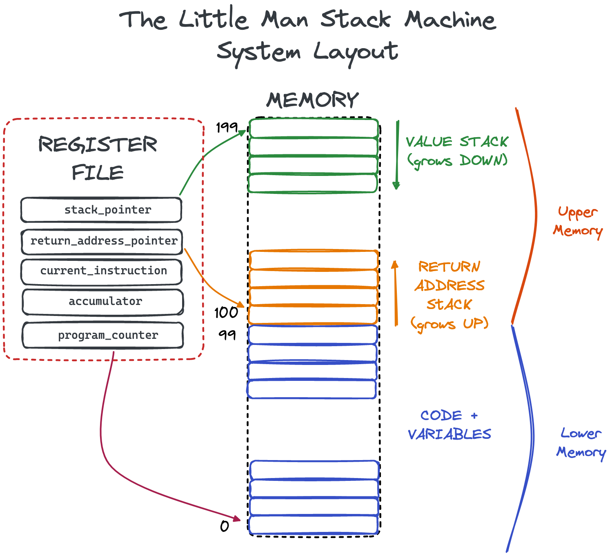

🙋 The Little Man Stack Machine
Introduction
The Little Man Stack Machine (LMSM) is a backwards-compatible extension of the venerable and excellent Little Man Computer (LMC) teaching computer model. It is designed to be a teaching aid, to show people how various aspects of computing work in an easy and approachable manner:
- The operations of a basic Von-Neumann style computer
- How assembly works
- How assembly can be converted to machine code
- How function calls can be implemented using basic hardware
- How recursive function calls work
- How stack-based languages work
- How a high-level programming language can be compiled to assembly
The LMSM is simple enough that someone interested should be able to build an LMSM emulator, an assembler and a compiler from a high-level language to assembly in a short amount of time, such as within a single quarter or semester.
Like the LMC, the LMSM models a simple Von Neumann computing machine and the execution cycle is identical to the LMC. In order to better support more computer topics that the LMC the LMSM adds the following functionality:
- The memory space of the LMSM is doubled from 100 slots to 200 slots.
-
Two new registers are available:
-
The
stack pointerregister that points to the top of the value stack. -
The
return address pointerregister that points to the top of the return address stack.
-
The
-
A new
LDI"immediate" instruction is added for loading immediate values directly into the accumulator. - A new set of stack-related instructions are available for working with the two stacks available on the LMSM
- Two "virtual" assembly instructions are available to make assembly coding on the LMSM a bit more pleasant.
System Diagram
Below is a system diagram of the LMSM:
Overall System Description
Like the LMC, the LMSM works only in terms of integers between the values -999 and 999. These integers can be interpreted as either data or as instructions, depending on the context they are used in. The LMSM follows a simple Von Neumann style Instruction Cycle: it loads an instruction from memory, bumps the program counter, executes the instruction and then repeats.
More detail on the execution cycle can be found on the Assembly & Execution page.
Registers
The LMSM has a total of five registers (two more than the LMC). The registers are as follows:
-
The
program_counterregister - a register that points to memory location of the next instruction to execute. This register starts with the value 0. -
The
accumulatorregister - a register that is used to "accumulate" values by, for example, an instruction adding a value in memory to the value already in the accumulator. This register starts at value 0. -
The
current_instructionregister - a register that holds the currently executing instruction. This register starts at value 0. -
The
stack_pointerregister - a register that points to the memory location at the "top" of the value stack. This pointer starts at value 200 (meaning no stack exists) and is decremented as the value stack grows. -
The
return_address_pointerregister - a register that points to the memory location at the "top" of the return address stack. This pointer starts at value 99 (meaning no the return address stack is empty) and it is incremented as the value stack grows.
Memory
The LMSM has a total of 200 memory slots, double that of the LCM. The memory is split into two sections: "lower"
and "upper" segments. Traditional LMC instructions such as ADD operate on the lower memory segment,
while the LMSM new stack instructions operate on the upper section of memory.
The Stacks & Function Calls
A major goal of the LMSM is to provide good hardware infrastructure for implementing function calls so that students can see how the function call abstraction can be implemented on top of raw registers and memory. The function invocation mechanism in the LMSM is simple but it demonstrates the core concept of using a stack and it allows for recursive function calls.
See Functions for a detailed look at function calls on the LMSM.
Firth
While the LMC is a good for introducing students to how assembly and low level computation works, it does not provide enough infrastructure for creating a high-level programming language.
By offering a more sophisticated CPU model the LMSM makes it possible to create a simple Forth-inspired language in a relatively short amount of time. This "high-level" language can compile down to LSMS assembly code fairly easily and it includes functions, loops, conditionals and so forth: the basics of high-level programming.
See Firth for more information on this language.